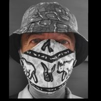
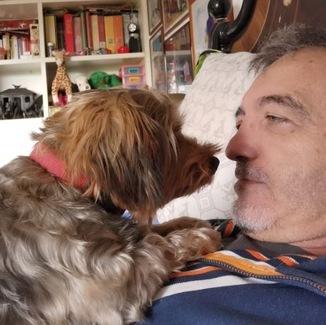
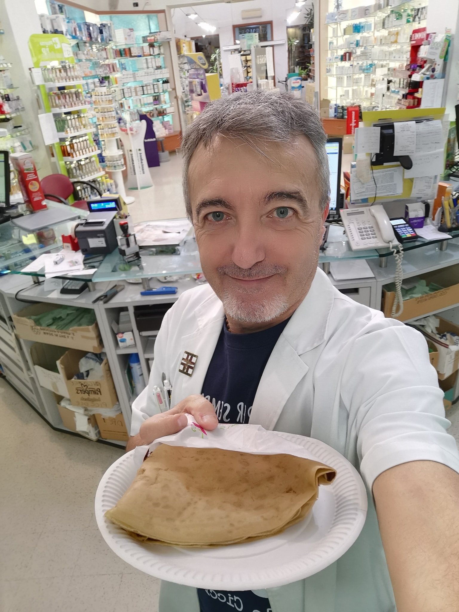
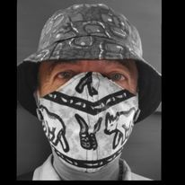
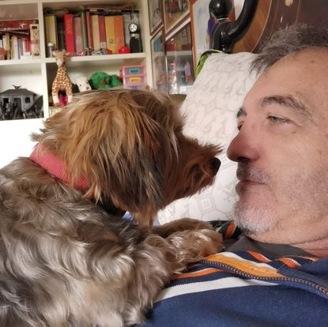
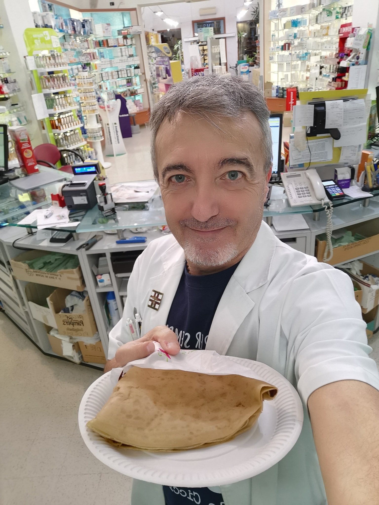

Welcome to My Portfolio
Paolo Ledà d'Ittiri
Witness the brilliance and creativity in my work.
Marvel at the exceptional projects that showcase my expertise.
Feel inspired by the remarkable challenges I've conquered.
Witness the brilliance and creativity in my work.
Marvel at the exceptional projects that showcase my expertise.
Feel inspired by the remarkable challenges I've conquered.

Hello, I am Paolo Ledà d'Ittiri, a dedicated pharmacist with a passion for helping children.
With over 10 years of experience in the pharmacy field, I have had the privilege of working in various countries across Africa, Europe, and Asia, providing essential healthcare services to children in need.
My work involves not only dispensing medication but also educating communities about health and wellness, organizing health camps, and collaborating with local and international organizations to improve the health outcomes of children.


Feel free to reach out to me for collaborations or to learn more about my work.
More about me


 




